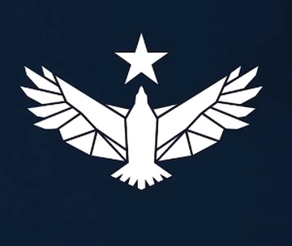

Choose Your Allegiance
United Colonies
The United Colonies represent order, authority, and the structured expansion of humanity among the stars.

Freestar Collective
A confederation of free worlds valuing independence and the spirit of exploration beyond any law.
Ryujin Industries
A powerful corporate faction where ambition meets innovation — climb the ladder or get left behind.

Crimson Fleet
A ruthless band of space pirates, loyal only to credits and chaos. Join if you dare.